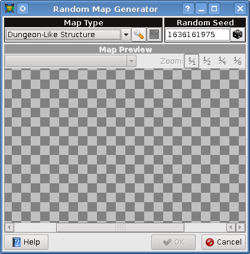

[User Interfaces]->[Random Map Generator]

- Map Type
- This is where you select a type of random map from the drop down menu. Once a type has been selected
you can click on the configure button to the right of it to configure the generator. After the generator
has been configured the generate button to the right of it will be enabled and you can click it to
generate the map.
- Random Seed
- This is the random seed used to start the generator. The seed can be entered manually, or you can click
on the button next to it to generate a random seed.
NOTE: The same seed will produce the exact same results every time.
- Map Preview
- This is where a preview of the generated map will be displayed. You can use the zoom buttons on the upper
right hand corner of the box to control the scale of the preview. Also if you used a generated such as
the building generator that generates multiple maps, the combo-box can be used to select which map you
wish to view.
The following are the map types available for generating: